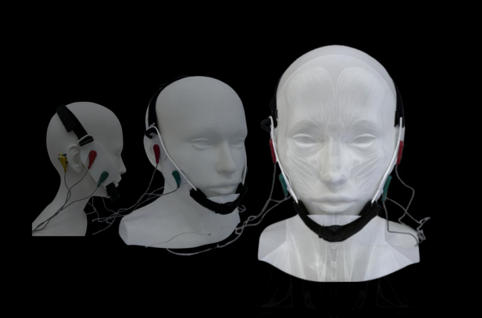

A Passive Biometric Monitoring System for Early Stroke Detection via Bilateral Facial EMG Asymmetry Analysis.
By leveraging non-invasive daily physiological monitoring, the critical window for stroke detection extends beyond emergency rooms into home environments — establishing an invisible lifeline for high-risk individuals living alone.
Against the backdrop of an aging society, millions of vulnerable individuals living alone face immense survival challenges. This research investigates the critical gap between stroke onset and medical intervention — a window determined by the speed of detection.
"I don't want to wear a tag. I'll just hang it by my bedside. If something really happens, I can reach it."
— 78-year-old retired teacher, high blood pressure, lives alone
"It's okay, why can't I get up... someone needs to help me call for help."
— 82-year-old grandfather, in bathroom, just finished showering
Proactive testing has become a mandatory requirement — passive biometric sensing that continuously monitors without user awareness or effort is the only viable solution for this population.
The core design question: how do we create a monitoring system that is invisible to the user, yet precise enough to catch early stroke signals? The answer lies in reframing surveillance as companionship — and presence as protection.
Apple Watch achieves broad cardiovascular monitoring but no specificity for neurovascular events. Our EMG approach targets the exact biological marker of stroke onset.
Personal Emergency Response Systems require conscious, physical activation — impossible when stroke causes motor and cognitive impairment simultaneously.
Stroke commonly causes aphasia — loss of speech. Voice-activated systems fail at precisely the moment they are needed most.
A dual-path machine learning architecture processes simultaneous audio and visual signals from bilateral facial EMG channels, achieving 94.2% real-time accuracy through a validated CNN-LSTM neural network.
The validated fusion architecture is translated into a compact, battery-powered sensing unit — a portable device integrating synchronized image capture and acoustic recording with onboard preprocessing for authentic field deployment.
Lightweight bilateral electrode headset designed for passive wear during sleep and stationary activity periods. No active management required by the user after initial calibration.
Electroencephalography testing identified zygomaticus major as the most effective location. Red electrode on positive, green on negative, yellow behind ear as grounding reference.
Simultaneous alert dispatch to registered caregivers, family contacts, and emergency services with location data and detection confidence score.